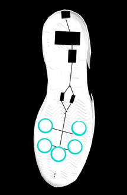
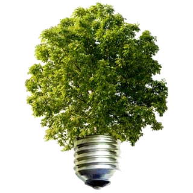
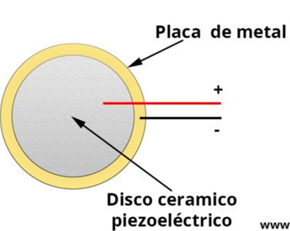
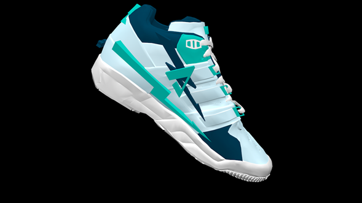

La idea de este producto surgió tras la constante demanda de fuentes de energías alternas debido a la explotación extrema de los recursos con las que tradicionalmente se crean. Nuestra prioridad es aprovechar una fuente de energía que no ha sido tomada en cuenta y que además es de fácil alcance, usando energía cinética producida por nuestros propios movimientos, en este caso el caminar.
QUIENES SOMOS? Somos una empresa capaz de desarrollar un sistema que puede convertir energía mecánica en eléctrica. Brindar otra opción de energía alternativa y amigable con el planeta que sea producida por una acción simple como el caminar, usando un par de tenis que sean capaces de transformar energía cinética, así como esta se disminuirá la necesidad de la quema de combustibles fósiles para la producción de electricidad.
|  |
SUSTENTABILIDAD La sustentabilidad es satisfacer alguna necesidad, con precaución sin dañar alguna otra cosa, con ello también sirve para tener un equilibrio y en nuestro proyecto eso buscamos, equilibrio, para poder disminuir el consumo excesivo y dañino de fuentes de energía no renovable. Nuestro producto es capaz de explotar una alternativa de energía no tan común para empezar a disminuir el impacto que tiene en nuestro planeta la obtención tradicional de energía, siendo nuestra opción una idea innovadora y de fácil alcance. No solo buscamos cuidar el medio ambiente implementando una energía renovable, si no también que nuestros productos sean amistosos con el planeta utilizando materiales reciclados y aptos para cumplir el objetivo de nuestro producto. |
TECNOLOGÍA La transformación energética, también conocida como conversión energética, es el proceso de cambiar la energía de un tipo de energía a otro. En física, la energía es una cantidad que proporciona la capacidad de realizar un trabajo (por ejemplo, levantar un objeto) o proporciona calor. Además de ser convertible, de acuerdo con la ley de conservación de la energía, la energía es transferible a una ubicación u objeto diferente, pero no se puede crear ni destruir. El centro de nuestro dispositivo es el uso de sensores piezoeléctricos. El sensor piezoeléctrico puede estar conformado por materiales cerámicos o cristales iónicos que son capaces de generar una pequeña energía eléctrica cuando estos son deformados. A este efecto se le conoce como efecto piezoeléctrico. Partes del sensor Al tener una construcción demasiado sencilla este sensor consta de 3 componentes principales: • Material piezoeléctrico • Placa de metal • Cables (Positivo y Negativo)
Para crear un sensor piezoeléctrico y poder generar energía eléctrica con la deformación, primero se debe de tratar el material para reordenar sus cargas, Ya que estas están inicialmente desordenas y no es posible generar electricidad. Una vez ordenadas las cargas podemos generar energía eléctrica al aplicar presión y deformarlas.
COMODIDAD La sustentabilidad es satisfacer alguna necesidad, con precaución sin dañar alguna otra cosa, con ello también sirve para tener un equilibrio y en nuestro proyecto eso buscamos, equilibrio, para poder disminuir el consumo excesivo y dañino de fuentes de energía no renovable. Nuestro producto es capaz de explotar una alternativa de energía no tan común para empezar a disminuir el impacto que tiene en nuestro planeta la obtención tradicional de energía, siendo nuestra opción una idea innovadora y de fácil alcance.
